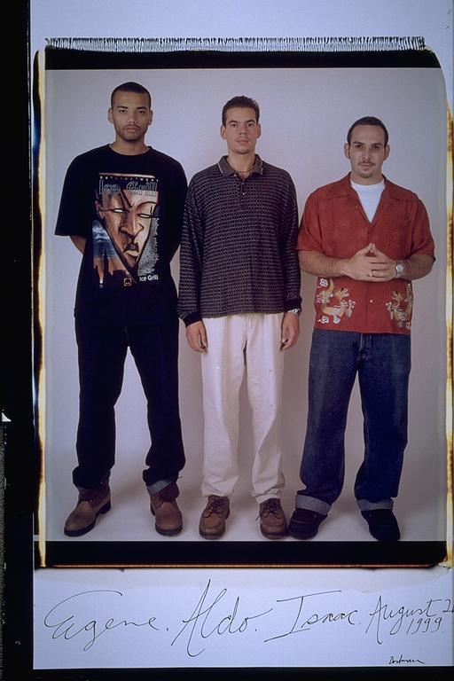

Pals: Boys Who Grew Up Together
elsadorfman.com/pals
Aldo: If our clothes were any indication of our different lifestyles, it must have been no coincidence. The actual clothes aren't what's relevant, just how different we're dressed. As we had entered our twenties, our lifestyles had changed, or rather had begun to take some individual form. Eugene was becoming politically active, building bridges with local community politicians. I on the other hand was wandering aimlessly. But hey, how's the saying go, "you're not lost if you don't care where you're going." Isaac, well, he was continuing to work hard, to ensure something beyond college.

elsad@comcast.net